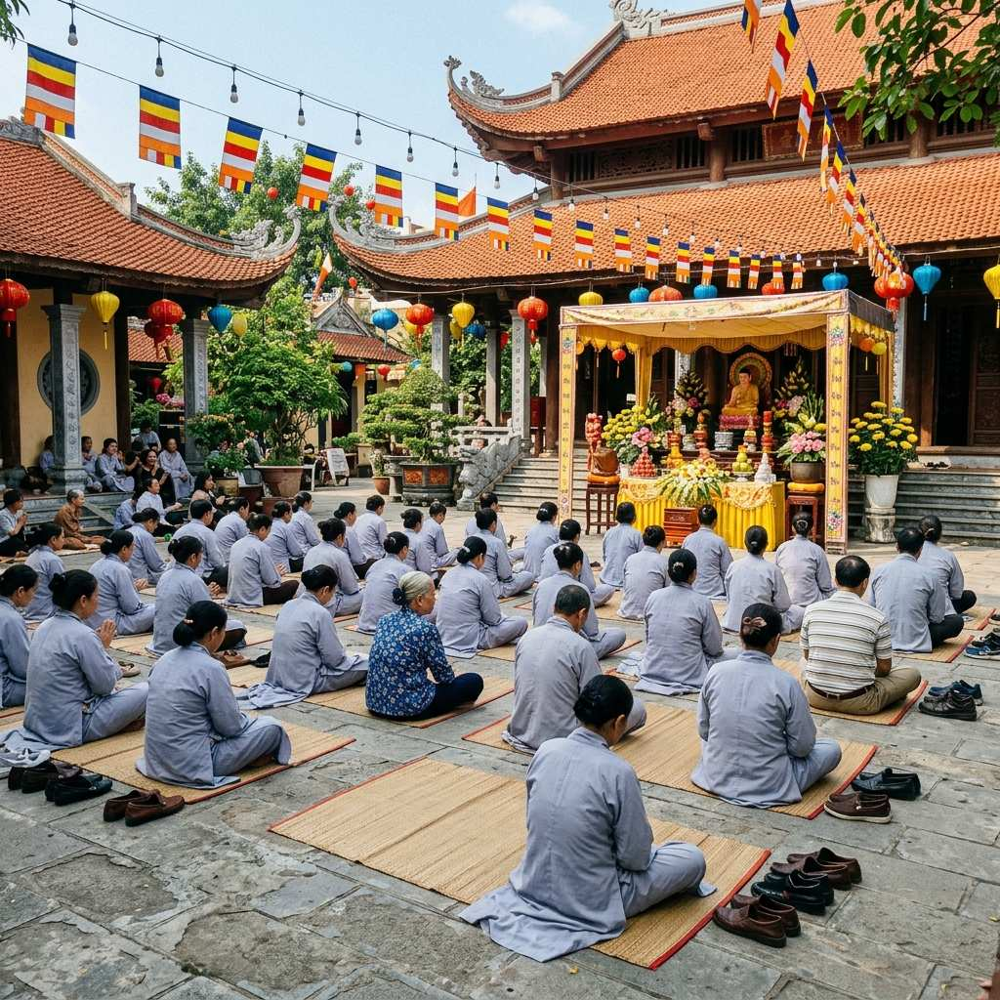

Đại Lễ Phật Đản Phật Lịch 2570 Tại Chùa Hồng Đức

Ngày 15/05/2026, tức ngày Rằm tháng Tư Âm lịch, Chùa Hồng Đức đã long trọng tổ chức Đại lễ Kính mừng Phật đản Phật lịch 2570 với sự tham gia của đông đảo chư Tôn đức Tăng Ni và hàng trăm Phật tử trong xã Điện Hồng cùng các vùng lân cận.
Chuẩn bị cho ngày lễ lớn
Từ nhiều ngày trước, bà con Phật tử đã cùng nhau dọn dẹp, trang trí chùa để chuẩn bị cho ngày lễ trọng đại. Khuôn viên chùa được trang hoàng bằng cờ Phật giáo năm sắc, hoa tươi và đèn lồng. Một lễ đài nhỏ được dựng lên tại sân chùa với tượng Phật sơ sinh đặt trong bồn hoa sen để thực hiện nghi lễ Tắm Phật truyền thống.
Các bà, các cô trong đạo tràng đã tự tay nấu cơm chay, làm bánh và chuẩn bị các món ăn chay để đãi khách thập phương. Không khí chuẩn bị tuy bận rộn nhưng đầy ấm cúng và hoan hỷ.
Diễn biến buổi lễ
Buổi lễ bắt đầu từ 7 giờ sáng với nghi thức Niêm hương bạch Phật do Thầy Thích Bửu Nhân chủ lễ. Tiếp theo là chương trình Tắm Phật — nghi lễ truyền thống tượng trưng cho việc gột rửa thân tâm, hướng đến sự thanh tịnh.
Mỗi Phật tử lần lượt đến trước lễ đài, thành kính múc nước thơm tưới lên tượng Phật sơ sinh, trong lòng phát nguyện tu tập theo gương Đức Phật. Nhiều bà con lớn tuổi đã rất xúc động khi thực hiện nghi lễ này.
Sau nghi thức Tắm Phật, Thầy Thích Bửu Nhân đã có bài pháp thoại ngắn về ý nghĩa ngày Đức Phật đản sinh, nhắc nhở Phật tử về tinh thần từ bi, trí tuệ và tinh tấn tu tập. Thầy nhấn mạnh rằng kỷ niệm ngày Phật đản không chỉ là nghi lễ hình thức, mà quan trọng nhất là mỗi người tự giác tu tập, mang lại an vui cho bản thân và cho mọi người xung quanh.
Bữa cơm chay cộng đồng
Sau buổi lễ, toàn thể đại chúng cùng thọ trai chay tại khuôn viên chùa. Bữa cơm chay giản dị nhưng đầy đủ hương vị, được chế biến hoàn toàn từ rau củ quả do bà con Phật tử mang đến cúng dường. Đây cũng là dịp để mọi người cùng trò chuyện, chia sẻ và gắn kết tình đạo, tình đời.
Đại lễ Phật Đản tại Chùa Hồng Đức đã khép lại trong không khí an lạc và hoan hỷ. Qua buổi lễ, mỗi Phật tử đều mang theo niềm vui và tâm nguyện tu tập để sống tốt hơn, thiện lành hơn trong cuộc sống hàng ngày.